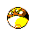
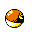

#100
Voltorb
Electric
Usually found in power plants. Easily mistaken for a Poké BALL, they have zapped many people
Base stats Total 275
HP40
Attack30
Defense50
Speed100
Special55
Details
- Species
- Ball
- Height
- 1'08"
- Weight
- 23.0 lb
- Catch rate
- 190
- Base exp
- 103
- Growth
- Medium Fast
Level-up moves
LevelMoveType
StartTackleNormal
StartScreechNormal
Lv 7ThundershockElectric
Lv 14SonicboomNormal
Lv 16Thunder WaveElectric
Lv 23SwiftNormal
Lv 28Light ScreenPsychic
Lv 36ThunderboltElectric
Lv 44ThunderElectric
Evolution
Where to find
TM / HM
TM06 ToxicTM09 Take DownTM10 Double-EdgeTM24 ThunderboltTM25 ThunderTM30 TeleportTM31 MimicTM32 Double TeamTM33 ReflectTM34 BideTM36 SelfdestructTM39 SwiftTM44 RestTM45 Thunder WaveTM47 ExplosionTM50 SubstituteHM05 Flash